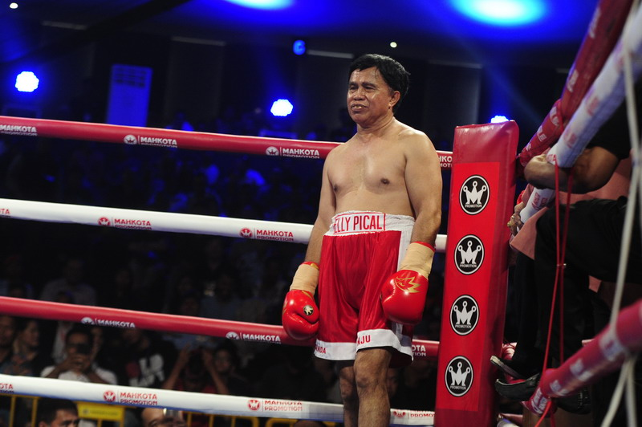

Berikut Ini Beberapa Biografi Para Atlet Indonesia
1. Ellyas Pical

Ellyas Pical (lahir 24 Maret 1960) adalah petinju asal Indonesia yang merupakan juara dunia pertama dari Indonesia. Ellyas Pical juga merupakan putera daerah/anak negeri Ullath, ia merupakan keturunan dari keluarga besar (fam/marga/mata rumah) Pical.
Awal Bertinju
Pical jatuh cinta kepada olahraga tinju sejak menonton pertandingan-pertandingan tinju di TVRI, terutama pertandingan Muhammad Ali. Pical telah menggeluti olahraga tinju sejak berusia 13 tahun, dengan berlatih sembunyi-sembunyi karena dilarang oleh kedua orangtuanya. Sebagai petinju amatir yang bermain di kelas terbang, ia kerap menjadi juara mulai dari tingkat kabupaten hingga kejuaraan Piala Presiden. Karier profesionalnya dimulai pada tahun 1983 dalam kelas bantam junior. Sejak itu, berturut-turut sederet prestasi tingkat dunia diraihnya, seperti juara OPBF setelah mengalahkan Hi-yung Chung asal Korea Selatan dengan kemenangan angka 12 ronde pada 19 Mei 1984 di Seoul, Korea Selatan. Atas kemenangan ini, Pical menjadi petinju profesional pertama Indonesia yang berhasil meraih gelar internasional di luar negeri.
Kejuaraan Dunia
Ia merebut gelar juara IBF kelas bantam yunior (atau kelas super terbang) dari petinju Korea Chun Ju-do di Jakarta pada tanggal 3 Mei 1985.
Setelah mempertahankan gelar melawan petinju Australia, Wayne Mulholland, 25 Agustus 1985, Pical harus mengakui keunggulan petinju Republik Dominika,
Cesar Polanco dengan angka di Jakarta. Namun Pical mampu bangkit dan membalas kekalahannya atas Polanco dengan balik memukul KO Polanco pada pertandingan kedua di Jakarta, 5 Juli 1986.
Pada tahun 1987, setelah bermasalah dengan manajernya Simson Tambunan dan Anton Sihotang, serta manajer jangka pendek Dali Sofari dan Khairus Sahel Dia akhirnya mengambil penyanyi Melky
Goeslaw sebagai manajernya dan Enteng Tanamal sebagai asisten manajer.
Sempat mempertahankan gelar melawan petinju Korea Selatan, Dong-chun Lee, langkah Pical terhenti setelah menyerah dari petinju Thailand, Khaosai Galaxy dengan KO pada ronde 14, pada tahun 1987.
Setelah terjadi pergulatan batin berbulan-bulan karena depresi pasca kekalahan melawan Galaxy, Pical mampu bangkit dan merebut gelar IBF kelas bantam yunior kembali dari sang juara bertahan waktu
itu Tae-ill Chang, juga dari Korea Selatan. Gelar ini sempat bertahan sampai 2 tahun, hingga akhirnya Pical harus terbang ke Ronoake, Virginia, Amerika Serikat untuk mempertahankan gelar melawan Juan Polo Perez dari Kolombia, (4 Oktober 1989, dan Pical harus menyerahkan gelarnya setelah kalah angka).
Masa Pensiun
Pasca kekalahan dari Perez, Pical sempat bertanding non gelar sebanyak 3 kali, hingga akhirnya ayah dari Lorinly dan Matthew Pical ini pun sedikit demi sedikit menyingkir dari ring tinju. Pical yang tidak sempat lulus SD ini kemudian bekerja sebagai petugas keamanan (satpam) di sebuah diskotik di Jakarta.
Sisi Gelap
Ia ditangkap pada 13 Juli 2005 oleh polisi karena melakukan transaksi narkoba di sebuah diskotik. Penangkapannya sempat menuai kritikan dari berbagai pihak yang menyoroti tiadanya jaminan hidup yang diberikan pemerintah kepada atlet yang telah mengharumkan nama negara. Pical lalu divonis hukuman penjara selama 7 bulan oleh Pengadilan Negeri Jakarta Pusat.
Pekerjaan Kini & Keluarga
Setelah bebas dari penjara, Pical diterima bekerja di KONI pusat, sebagai asisten ketua KONI, Agum Gumelar (catatan: ketua KONI sekarang: Rita Subowo). Sepanjang karier profesionalnya, rekornya adalah 20 kemenangan (11 KO), 1 seri, dan 5 kekalahan. Dari pernikahannya dengan Rina Siahaya Pical, ia memperoleh dua orang putra: Lorinly dan Matthew, kini tinggal di perumahan Duta Bintaro, Kota Tangerang. Liat Selengkapnya
2. Nico Thomas

Nicholas Thomas (lebih populer sebagai Nico Thomas; lahir 10 Juni 1966) adalah seorang petinju asal Indonesia. Ia merebut gelar juara dunia kelas terbang mini versi IBF dengan mengalahkan Samuth Sithnaruepol (Thailand) dengan angka di Jakarta, 17 Juni 1989. Namun gelar itu tak bertahan lama karena Thomas kemudian kalah KO di ronde 5 dari Eric Chavez (Philipina), di Jakarta, 21 September 1989.
Karier
Jenjang Amatir
* 1985: Medali perak cabang tinju - Sea Games Bangkok, Thailand.
* 1986: Medali emas cabang tinju – Piala Presiden IX, Jakarta, Indonesia
Jenjang Profesional
Juara dunia tinju kelas terbang mini versi IBF pada 17 Juni 1989 dengan mengalahkan Samuth Sithnaruepol dari Thailand. Namun gelar ini bertahan kurang dari 100 hari saja, karena kemudian dia kalah TKO ronde 5 dari Eric Chavez dari Filipina pada 21 September 1989, juga di Jakarta. Liat Selengkapnya
3. Chris Jhon

Yohannes Christian John, atau lebih dikenal sebagai Chris John (lahir 14 September 1979) adalah seorang petinju Indonesia. Chris John mencatatkan rekor sebagai juara dunia kelas bulu pertama yang berasal dari Indonesia, mencatatkan rekor sebagai petinju kedua terlama yang menjadi juara dunia kelas bulu sepanjang masa, serta mencatatkan rekor sebagai peringkat kedua dalam daftar petinju yang paling sering mempertahankan gelar juara dunia kelas bulu sepanjang masa. Ia tercatat sebagai petinju Indonesia kelima yang berhasil meraih gelar juara dunia, setelah Ellyas Pical, Nico Thomas, Ajib Albarado dan Suwito Lagola.
Masa Kecil
Chris John merupakan putra kedua dari empat bersaudara dari pasangan Johan Tjahjadi (alias Tjia Foek Sem) dan Maria Warsini. Johan Tjahjadi yang mantan petinju amatir, memperkenalkan dunia tinju pada Chris John dan adiknya Adrian sejak mereka berusia 5 tahun. Setelah bertanding dalam beberapa kejuaraan amatir di Banjarnegara, Chris John kemudian direkrut oleh pelatih tinju kenamaan, Sutan Rambing, di Semarang. Sejak kecil, Chris John juga berlatih olahraga beladiri Wushu.
Awal Karier
Chris John pertama kali muncul ke dunia publik melalui acara tinju di televisi nasional yaitu RCTI. Di acara ini Chris John berhasil menjadi juara di ring yang disiarkan secara live di RCTI setiap pukul 22:00 malam. Gaya bertarung wushu masih mempengaruhi
gaya tinju Chris John seperti cara menangkis menggunakan siku tangan.
Chris John kemudian terjun ke dunia tinju profesional pada tahun 1998 dalam debut melawan Firman Kanda. Saat itu Chris John menang angka dalam pertandingan 6 ronde. Namanya kemudian melesat bagai meteor saat dia berhasil mengkanvaskan petinju idola saat itu, Muhammad Alfaridzi,
dalam pertandingan menegangkan selama 12 ronde. Chris John sempat terkena knockdown dua kali di ronde pertama, tetapi dia berhasil membalikkan situasi dengan memukul KO Alfaridzi pada ronde ke-12, sekaligus merebut gelar juara nasional kelas bulu. Menurut pengakuan Chris John,
kondisinya sangat buruk saat itu, dan dia mengalami benturan kepala karena vertigo.
Setelah beberapa kali bertanding dalam perebutan gelar nasional, Chris John berhasil menundukkan rekan senegaranya Soleh Sundava pada tahun 2001 untuk merebut gelar PABA kelas bulu.
Kejuaraan Dunia
Meraih gelar juara kelas bulu WBA
Kesempatan emas bagi Chris John dan bangsa Indonesia tiba saat Chris John berkesempatan menantang Oscar Leon dari Kolombia pada 26 September 2003 di Bali. Chris John menang angka tipis (split decision) dalam pertandingan 12 ronde tersebut,
dan dinyatakan berhak menyandang gelar juara dunia WBA sementara (interim title).
Tak lama, WBA "menghibahkan" gelar juara definitif (bukan lagi gelar interim) kepada Chris John, saat sang juara bertahan Derrick Gainer dari Amerika Serikat kalah angka dari Juan Manuel Marquez (Meksiko, juara IBF). Saat itu, sesuai peraturan badan tinju WBA,
Marquez dinyatakan sebagai juara super (super champion) WBA karena berhasil menyatukan dua gelar WBA dan IBF, dan Chris John sebagai juara reguler.
Menang melawan Osamu Sato di Tokyo, Jepang
Meskipun demikian, gelar WBA definitif tersebut hanya dipandang sebelah mata oleh pers Indonesia, dan Chris John dianggap sebagai juara di atas kertas belaka. Namun semua pandangan miring itu terhapus saat dengan perkasa Chris John mengalahkan lawannya Osamu Sato (Jepang) di Ariake Colliseum, Tokyo, Jepang, pada 4 Juni 2004. Chris John menang angka mutlak atas lawannya yang didukung oleh suporter tuan rumah. Dengan kemenangan itu, selain mendapat pengakuan di Indonesia, Chris John juga menjadi sangat populer di Jepang. Saat turun dari tangga pesawat, seluruh pilot dan awak pesawat Garuda Indonesia memberi hormat ala militer kepada Chris John dan tim.
Seri melawan Jose Cheo Rojas yang pertama
Pada 3 Desember 2004, Chris John berhasil mempertahankan gelar melawan petinju kidal Jose Cheo Rojas (Venezuela) di Tenggarong, Kutai Kartanegara melalui pertarungan berdarah akibat benturan kepala pada ronde 4.
Pertarungan itu dihentikan oleh wasit dan dinyatakan hasilnya seri atau technical draw dan Chris John tetap juara. "Peraturan dari WBA sebelum menyelesaikan empat ronde terjadi accident benturan kepala. Dengan demikian,
pertandingan ini dinyatakan dengan technical draw dan Chris John tetap juara".
Sayang, setelah pertandingan ini, Chris John terpaksa harus memutuskan kontrak dengan pelatih Sutan Rambing karena ketidaksepakatan masalah pembagian hasil pertandingan. Selanjutnya,
Chris John dilatih oleh Craig Christian dari Harry's Gym, Perth Australia. Berbulan-bulan pertikaian Chris John dan Sutan Rambing terus berlanjut dan semakin memanas serta sempat berlanjut ke meja hijau,
tetapi akhirnya masalah ini bisa diselesaikan secara kekeluargaan.
Liat Selengkapnya
4. Muhammad Rahman

Muhammad Rachman (lahir 23 Desember 1971) adalah seorang petinju asal Indonesia. Ia adalah mantan juara dunia kelas terbang mini 47,6 kilogram versi IBF dan WBA.
Kehidupan Awal
Rachman adalah anak ketiga dari sembilan bersaudara dari pasangan H. Suhaimat (ayah, seorang PNS di Merauke) dan Siti Maryam (ibu, petani di Merauke). Semasa kecil, Rachman adalah seorang anak yang bandel. Berkelahi, tidur di jalan, menggelandang di pasar, bahkan pengalaman dipenjara sudah bukan hal asing bagi Rachman saat itu. Kemudian, suatu saat dia berpikir, kenapa kenakalannya tersebut tidak disalurkan lewat olahraga tinju.
Karier
Awal Karier
Rachman kemudian memutuskan bergabung dengan sebuah sasana tinju amatir di Merauke saat dia kelas 1 SMP (sekitar usia 13 tahun). Namun sampai lulus SMEA pada usia 19 tahun, Rachman hanya melulu berlatih, tanpa pernah sekalipun bertanding.
Akhirnya Rachman membulatkan tekad untuk berkelana ke tanah Jawa, dan dia "terdampar" di kota Surabaya (tahun 1991). Di kota Pahlawan itu, Rachman mencoba bergabung dengan sasana Pirih milik pelatih dan promotor tinju Eddy Pirih.
Karena usianya sudah menginjak 20 tahun, dan dianggap terlambat untuk memulai karier di tinju, Eddy Pirih menolak Rachman bergabung di sasananya. Namun Rachman tidak putus asa, dan akhirnya ia diberi kesempatan sparring dengan para petinju dari Sasana Pirih.
Melihat kemampuan, bakat dan minat Rachman yang sangat besar terhadap tinju, akhirnya dia diterima berlatih di Sasana Pirih.
Pada tahun 1993 M. Rachman mengawali karier di tinju profesional, tanpa sekalipun bertanding di jenjang amatir, saat dia menang angka 4 ronde atas Muhammad Daud.
Juara Nasional & Internasional
Pada tahun 1991, Rachman berhasil meraih gelar juara nasional kelas terbang mini, saat memukul KO juara bertahan Muhammad Sadik. Kemenangan demi kemenangan diraih Rachman, sampai akhirnya promotor kenamaan saat itu, Aseng, menandingkannya di tingkat internasional melawan petinju Filipina, Roger Mananquil. Rachman berhasil memukul KO Mananquil pada ronde 8 dan merebut gelar juara IBF Intercontinental (level Asia Pasifik) pada tahun 2000.
Juara Dunia Versi IBF
Setelah lebih dari 10 tahun berkecimpung di dunia tinju pro, Rachman berhasil merebut gelar juara dunia IBF kelas terbang mini, saat dia berhasil menundukkan petinju lincah dari Kolombia, Daniel Reyes (14 September 2004). Rachman tercatat sudah memperahankan gelarnya melawan Fahlan Sakreerin (Thailand) dengan technical draw pada 5 April 2005, dan menang KO ronde 6 atas Omar Soto (Meksiko) pada 6 Mei 2006. Pada 23 Desember 2006, Rachman kembali mempertahankan gelar dengan manis, saat memukul KO petinju Filipina Benjie Sorolla pada ronde ke-6. Sebuah kado manis tepat pada hari ulangtahunnya yang ke-35. Liat Selengkapnya